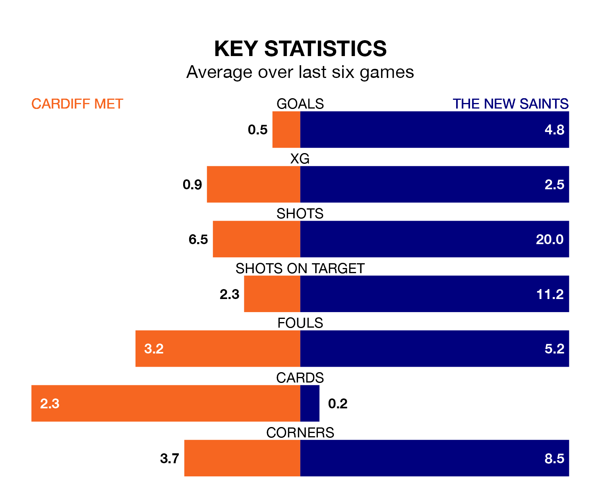

Cardiff Met host The New Saints in Saturday's early match at the Cardiff International Sports Stadium looking to bounce back from defeat last time out in the Welsh Premier League.
The Archers, who sit zero in the league after 30 games, fell to a 3-0 home defeat to Connah's Quay on April 6.
They face a The New Saints side who picked up a win in their last match, a 4-1 victory against Bala Town, and who sit first in the table.
With 110 goals in 30 games so far this season, The New Saints are the league's highest scorers with 3.7 goals per game. And they are conceding fewer than average, letting in 18 goals at a rate of 0.6 per game.
Cardiff, meanwhile, are below average scorers, with 1.1 goals per game, compared to a league average of 1.5. They have conceded 1.8 goals per game.
The Archers are in bad form in the Welsh Premier League, with one win and five losses from their last six games.
With six wins and no losses over that period, the Saints' form is much better – they have taken 18 points from 18, compared to the home side's three.
In the last 10 years, Cardiff and The New Saints have played each other on 24 occasions. Cardiff won three of them, The New Saints 15, and they drew six times.
On average, the Archers scored 1.0 goals and the Saints 3.1 in those matches.
Their last meeting was on March 30, when The New Saints won 6-2 away.
Updated: 10:01 (UTC), 12/04/24